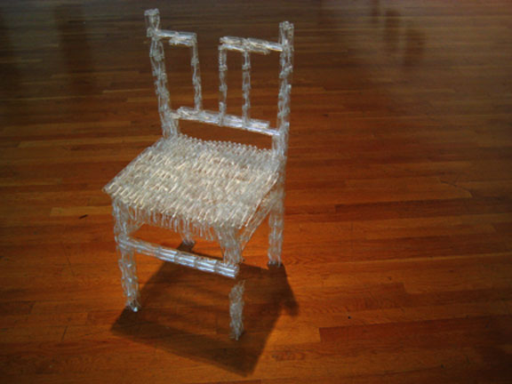
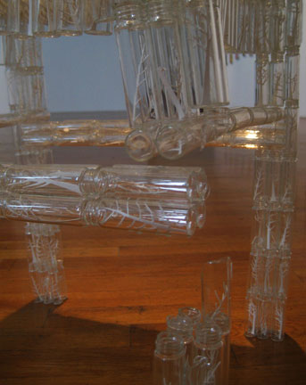

|  |  |
| discovering buffalo is a project that started in boston. mostly because i was thinking about how memories feel strangely disconnected sometimes when no one knows your history. the chair is made of two dram bottles and paper cut outs of trees and bison. | |